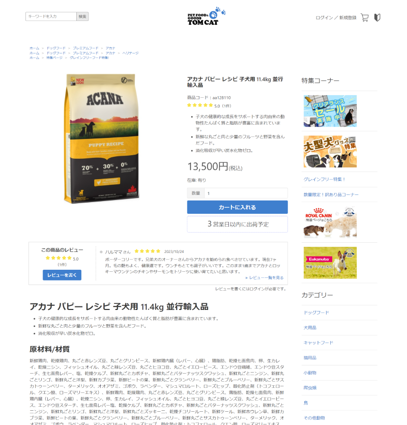
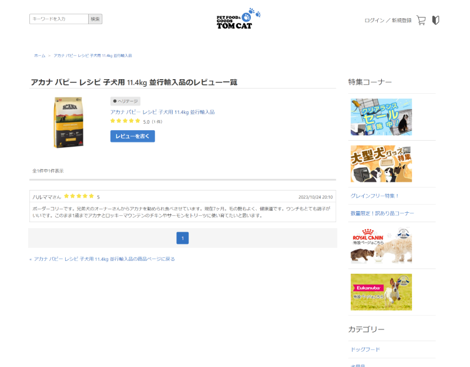
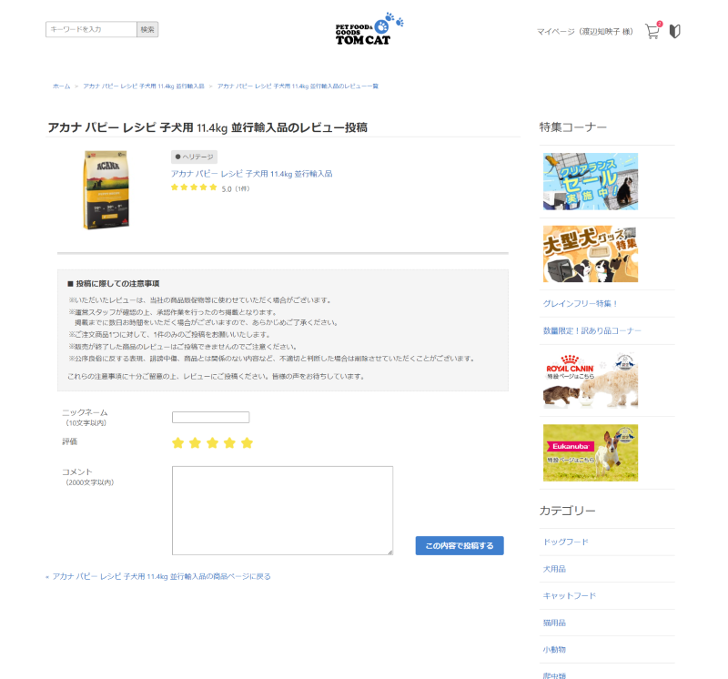

ECサイトレビュー機能実装
- 
- 
- 
制作情報
制作期間
1.5ヶ月
担当業務
UIデザイン、コーディング
概要
ECサイト構築サービス（makeshop）を用いて、レビュー投稿フォーム・レビュー閲覧ページ・商品ページ内からレビューを参照する機能を実装しました。
smartyを元にしたサービス独自タグを用い、表示切り分け処理（レビューがある場合/ない場合）も実装しました。
1.5ヶ月
UIデザイン、コーディング
ECサイト構築サービス（makeshop）を用いて、レビュー投稿フォーム・レビュー閲覧ページ・商品ページ内からレビューを参照する機能を実装しました。
smartyを元にしたサービス独自タグを用い、表示切り分け処理（レビューがある場合/ない場合）も実装しました。